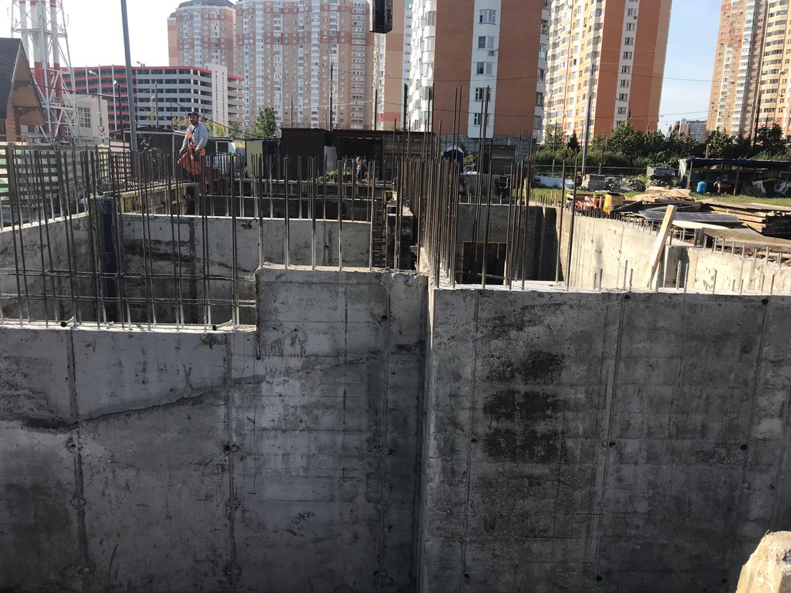
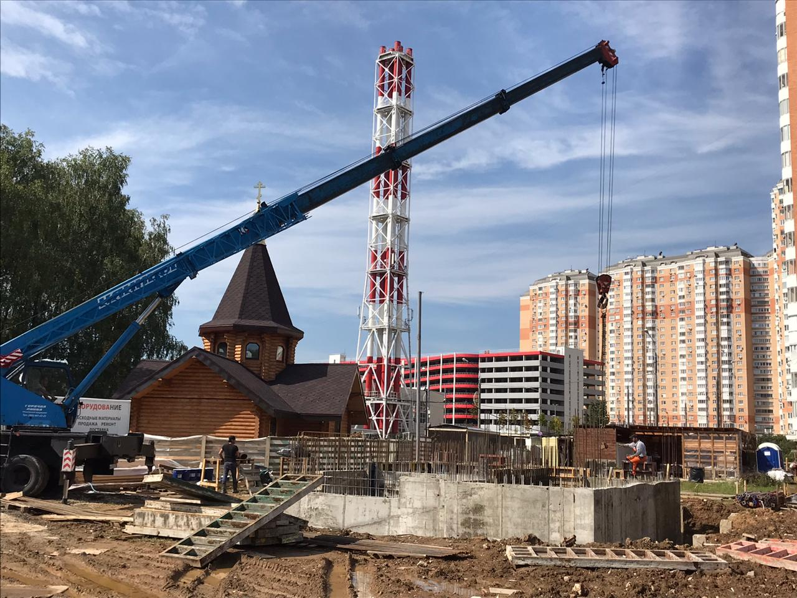

«Человек милосердный благотворит душе своей» (Притч. 11.17), – говорит премудрый Соломон.
В августе 2020 года началось строительство храмового комплекса святого великомученика Георгия в Московском.
Храм строится исключительно на ваши пожертвования.
Ваша лепта – это неугасимая лампада церковной молитвы о Вас и Ваших близких.
Во всех храмах за каждым богослужением возносятся молитвы о строителях и благотворителях. Их имена - в основании будущего Дома Божьего на земле!
Пожертвования вы можете оставить:
- в церковной лавке,
- на карту Сбербанка № 4276 3800 5321 9205,
- через «Сбербанк-онлайн» по номеру телефона +7 965 253-29-70,
- на Яндекс. Кошелёк № 410014974517562
безналичным переводом по реквизитам:
Наименование – Местная религиозная организация Православный приход храма святого великомученика Георгия в Московском гор.Москвы Московской епархии Русской Православной Церкви (Московский Патриархат)
Банк: ПАО «Сбербанк России» г.Москва
р/с № 40703810238000008896
к/с 30101810400000000225
БИК 044525225
ОГРН 105000003965
ИНН/КПП 5003088500 / 775101001
ОКВЭД 91.31 (основной)
ОКАТО 45297565001
ОКПО 68143610
По всем вопросам обращаться в церковную лавку по телефону: +7 (977) 557-74-62 или к настоятелю храма.
Вы можете внести пожертвование на именной кирпичик в стене будущего храма. Можно будет указать имя кого-либо из ваших близких, не только о здравии, но и о упокоении тех, кого уже нет с нами здесь, на земле.
Храм — это лучшее наследие, которое мы можем оставить нашим детям и внукам!